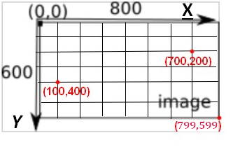
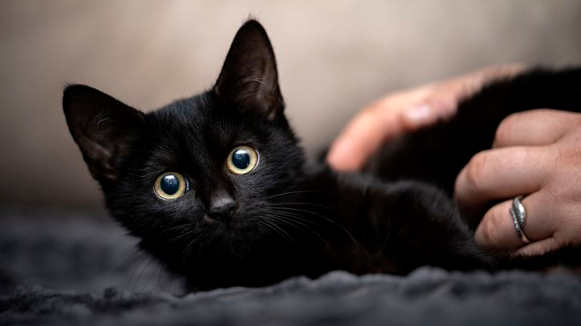

Python est un language de programmation qui nous permet ici de travailler sur les pixels d’une image de manière pratique et simple.Une image numérique est composée de milliers de petits points appelés pixels et chacunes de ces pixels contient des nombres qui représentent les couleurs (rouge, vert et bleu).Avec Python, on peut ouvrir une image, lire les valeurs de chaque pixel et modifier ces nombres pour transforme une image,par exemple en la rendant plus claire ou en noir et blanc. On utilise Python parce que c’est un langage plus pratique à utiliser pour faire des calculs rapidement. Cela permet de mieux comprendre comment fonctionne une image numérique tout en apprenant les bases de la programmation.De plus chaque pixel a des coordonées(x;y).

Par exemple ici,on a un pixel de coordonnées(100;400),un pixel de coordonnées(700;200) et un pixel de coordonnées(799;599).On constate dans le shèma ci-dessus,le pixel de coordonnées(0;0)se trouve en haut à gauche de l'image.Si l'image fait 800 pixels de largeur et 600 pixels de longueur,le pixel de coordonnées(100;400)sera en bas à gauche de l'image,le pixel de coordonnées(700;200)sera en haut à droite de l'image et le pixel de coordonnées(799;599)sera en bas à droite de l'image.


"from PIL import Image" : pour travailler sur les images on doit avoir besoin d'une extension de Python (appelé bibliothèque). Cette bibliothèque se nomme PIL. • "img = Image.open("./image/Capture d’écran 2026-02-21 003804.png")"; c'est grâce à cette ligne qu'on doit montrer qu'on pourra travailler avec l'image "./image/Capture d’écran 2026-02-21 003804.png".Pour travailler avec une autre image, il suffit de remplacer "./image/Capture d’écran 2026-02-21 003804.png" par un autre nom (attention,le fichier image devra se trouver dans le même dossier que le ficher du programme Python). • "r,v,b= img.getpixel((723,406))"cette ligne récupère les valeurs du canal rouge (r), du canal vert (V) et du canal bleu (b) du pixel de coordonnées (723,406).Dans la suite du programme, r correspondra à la valeur du canal rouge, v correspondra à la valeur du canal vert et b correspondra à la valeur du canal bleu • "print("canal rouge : ",r,"canal vert : ",v, "canal bleu : ",b)"permet d'imprimer le résultat
Pour obtenir le négatif d’une image avec Python, on commence par ouvrir l’image à l’aide d’une bibliothèque nommé Pillow.Tout d'abord ,il suffit d’inverser ces valeurs.Il faut remplacer chaque composante par 255 moins sa valeur (255 − r).On fait cela pour tous les pixels de l’image à l’aide d’une boucle puis on enregistre la nouvelle image obtenue.Le résultat est une image où les couleurs sont inversées où on peut remarquer que les zones claires deviennent foncées et les zones foncées deviennent claires.

Pour transformer une image en couleur en image en niveaux de gris avec Python, on commence par ouvrir l’image à l’aide d’une bibliothèque nommé Pillow.D'abord pour obtenir une image en niveaux de gris à l'aide d'une image en couleur,on calcule pour chaque pixel une seule valeur appelée niveau de gris.On fait la moyenne des trois composantes : (r + v + b) ÷ 3. Ensuite, on remplace les trois valeurs du pixel par cette même valeur (gris, gris, gris).Puis en faisant cela pour tous les pixels de l’image, on supprime les couleurs et on obtient une image composée uniquement de différentes nuances de gris,à partir du noir jusqu'au blanc.